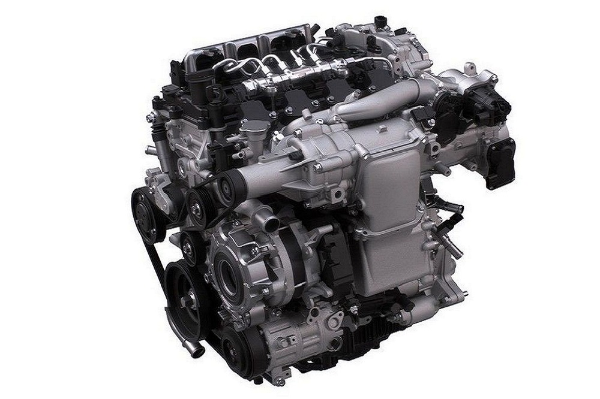
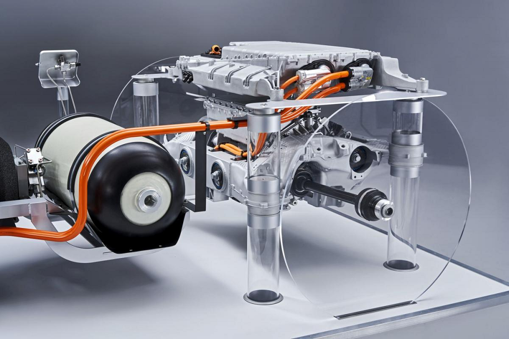
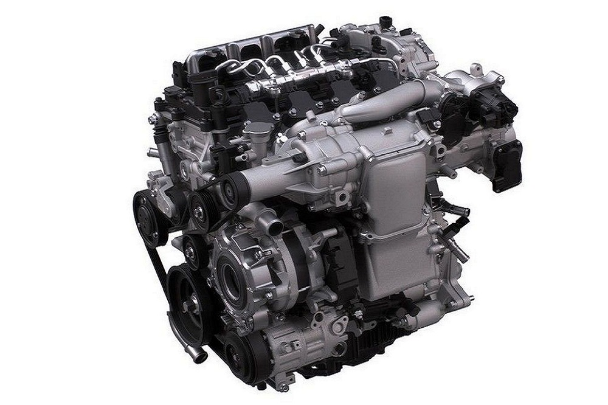
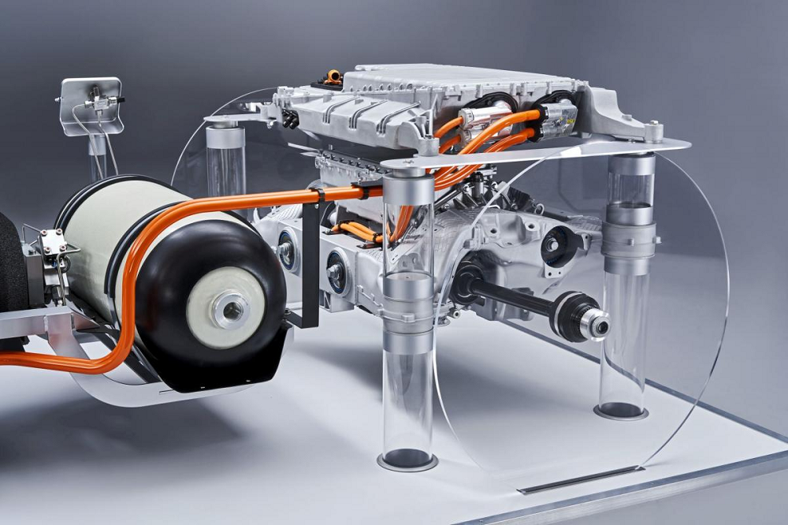
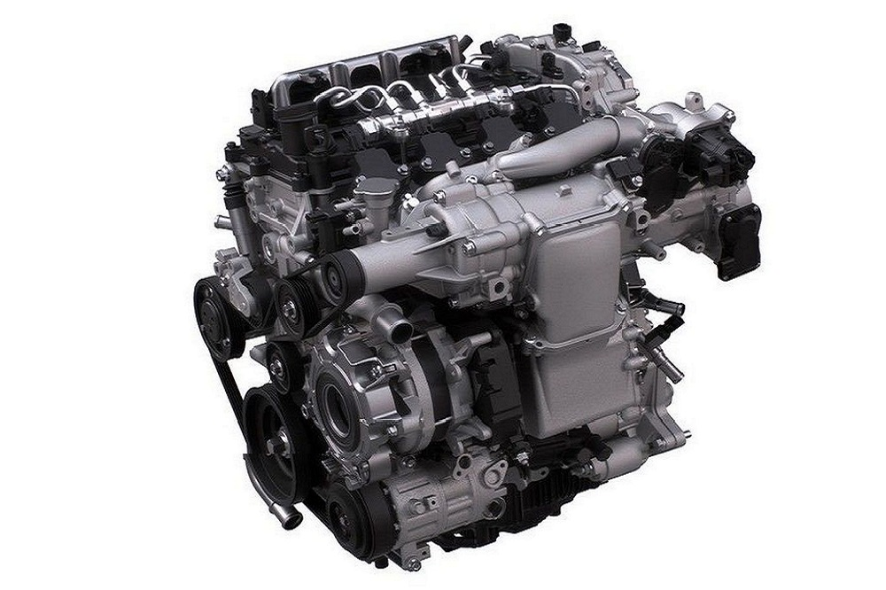
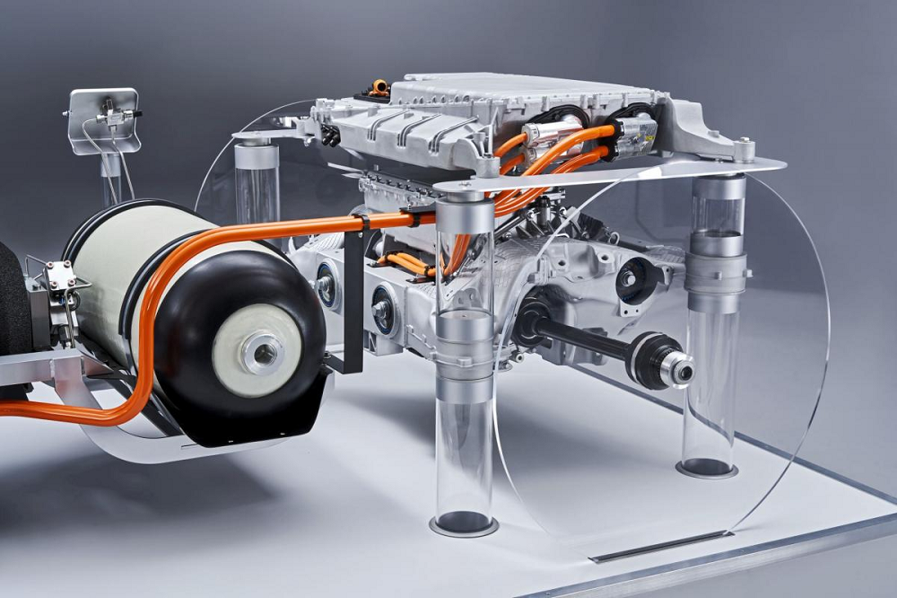
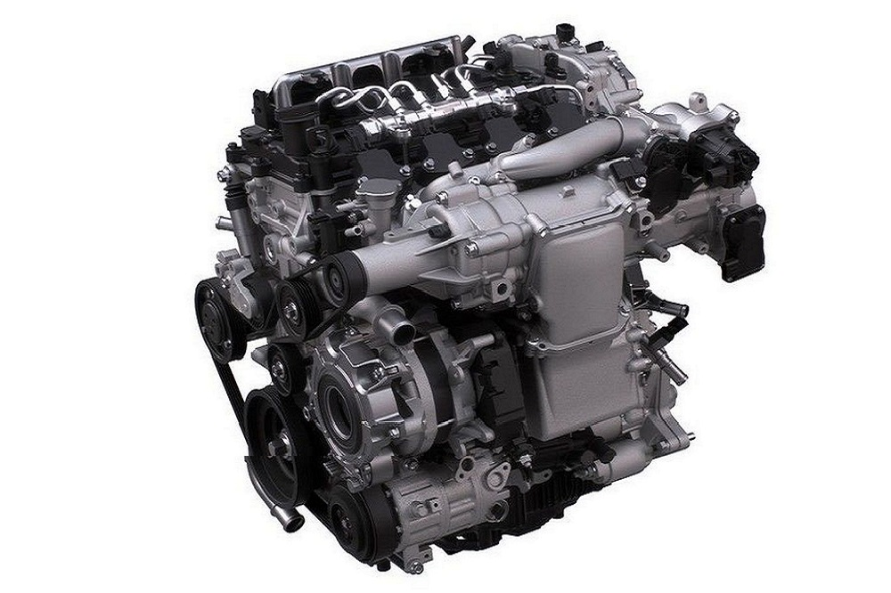
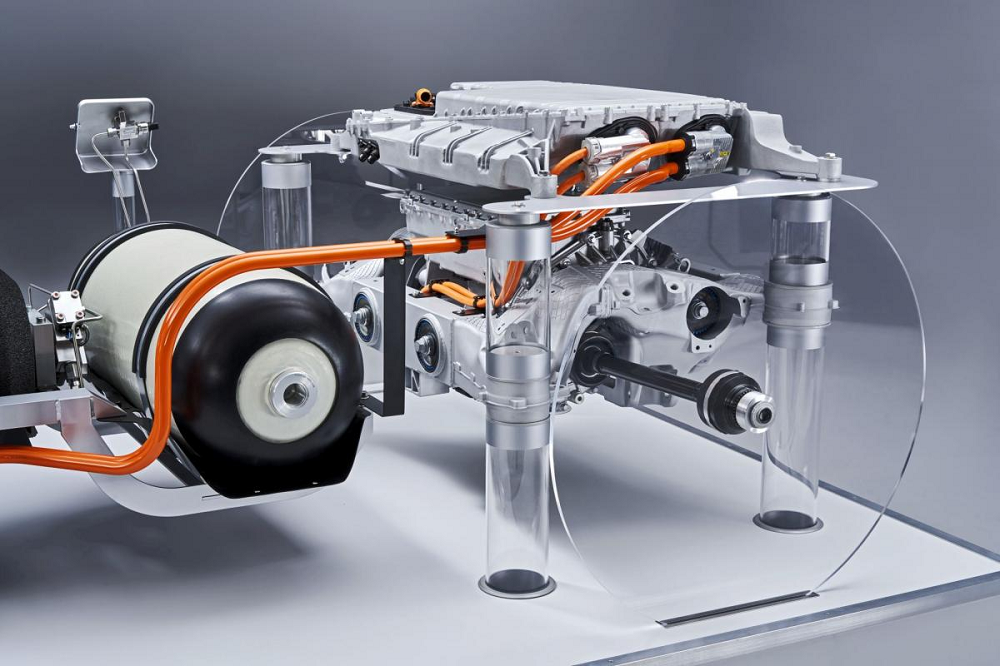

Passa com o rato sobre as várias partes do motor para descobrires a sua função.
Hoje em dia, os motores elétricos podem ser encontrados em vários dispositivos do dia-a-dia. Aqueles que usam motores de corrente contínua (DC) têm funções bastante básicas. O motor está conectado diretamente a uma fonte de energia e a sua velocidade de rotação depende diretamente da intensidade da corrente. Embora fáceis de produzir, estes motores elétricos não atendem aos requisitos de potência, fiabilidade ou tamanho de um veículo elétrico, embora seja possível encontrá-los nos limpa para-brisas, janelas e outros mecanismos mais pequenos dentro do carro.
O estator e o rotor:
Se quiser entender como funciona um veículo elétrico, é preciso estar familiarizado com os elementos físicos de um motor elétrico. Isto começa com a compreensão dos princípios das suas duas partes principais: o estator e o rotor. A diferença entre os dois é fácil de lembrar: o estator é estático, enquanto o rotor gira. Num motor, o estator usa energia para criar um campo magnético que gira o rotor.
Então, como funciona um motor quando se trata de alimentar um veículo elétrico? Para isso devemos recorrer aos motores de corrente alternada (AC), que requerem a utilização de um circuito de conversão para transformar a corrente contínua (DC) fornecida pela bateria. Vamos ver mais de perto os dois tipos diferentes de corrente.
Alimentação de um veículo elétrico: AC vs. DC:
Para percebermos melhor como funciona um carro elétrico, é também necessário saber a diferença entre AC e DC (correntes de eletrões). A eletricidade passa por um condutor de duas maneiras. A corrente alternada (AC) descreve uma corrente elétrica na qual os eletrões mudam de direção periodicamente. A corrente contínua (DC), como o próprio nome sugere, flui em apenas uma única direção. A bateria num carro elétrico funciona usando corrente contínua. Mas, no que diz respeito ao motor principal do veículo elétrico (que fornece tração ao veículo), essa energia DC deve ser transformada em AC através de um conversor.
Então, o que acontece quando essa energia chega ao motor? Isso vai depender do facto de termos um veículo que use um motor síncrono ou assíncrono.
Tipos de motor elétrico:
Existem dois tipos de motores de corrente alternada na indústria automobilística: motores síncronos e motores assíncronos. Quando se trata de um veículo elétrico, os motores síncronos e assíncronos têm os seus próprios pontos fortes - um não é necessariamente melhor que o outro.
Motores síncronos e assíncronos:
Um motor assíncrono, também chamado de motor de indução, depende do estator elétrico para gerar um campo magnético giratório. Isto, então, puxa o rotor para uma perseguição sem fim, como se o rotor estivesse sempre a tentar alcançar o campo magnético sem nunca o conseguir. Um motor assíncrono é frequentemente usado em veículos elétricos que são feitos para ser conduzidos a grandes velocidades por longos períodos de tempo.
Num motor síncrono, o rotor atua como um eletroíman, participando ativamente na criação do campo magnético. A sua velocidade de rotação é, portanto, diretamente proporcional à frequência da corrente que alimenta o motor. Isto torna um motor síncrono ideal para a condução urbana, o que normalmente requer paragens regulares e arranques a baixas velocidades.
Os motores síncronos e assíncronos também funcionam de maneira contrária, o que significa que podem converter energia mecânica em eletricidade durante a travagem. Este é o princípio da travagem regenerativa, que deriva do alternador.
Partes de motores elétricos:
Vamos agora ver algumas das diferentes peças encontradas no motor de um veículo elétrico: Desde ímanes de motor elétrico de Motores Síncronos Excitados Externamente (MSEE) à unidade propulsão em geral.
Ímanes permanentes:
Alguns motores síncronos usam um motor de íman permanente para o rotor. Esses ímanes permanentes são embutidos no rotor de aço, criando um campo magnético constante. Um íman de motor elétrico permanente tem a vantagem de operar sem fonte de alimentação, mas requer o uso de metais ou ligas como o neodímio ou o disprósio. Esses materiais raros são ferromagnéticos, o que significa que podem ser magnetizados para se tornarem ímanes permanentes. Estes são usados para vários fins industriais: desde geradores de turbinas eólicas, ferramentas sem fios e fones de ouvido, até dínamos de bicicletas… E obviamente motores de veículos elétricos.
O problema é que os preços desses materiais raros são muito voláteis. Apesar do nome, eles não são necessariamente tão raros, na verdade, mas são encontrados quase exclusivamente na China, que, portanto, tem quase um monopólio sobre sua produção, venda e distribuição. Isso explica o porquê de os fabricantes terem de trabalhar arduamente para encontrar soluções alternativas para os motores de veículos elétricos.
Motores síncronos excitados externamente:
Uma dessas soluções, usada pela Renault para o Novo ZOE, envolve a construção de um íman de motor elétrico a partir de uma bobina de cobre. Isso requer um processo industrial mais complexo, mas torna possível evitar problemas de abastecimento, ao mesmo tempo que mantém uma excelente relação entre o peso do motor e o torque criado.
Guillaume Faurie, chefe de engenharia da fábrica da Renault Cléon em França, dá uma ideia da complexidade do motor do Novo ZOE: “A fabricação de um MSEE requer processos de enrolamento e impregnação de bobina específicos. As restrições das expectativas de desempenho do produto, o objetivo de reduzir a relação peso-potência e a taxa rápida de produção exigem que sejam empregues com eficácia as tecnologias mais avançadas para realizar esses processos.”
A unidade de propulsão elétrica:
Num veículo elétrico, o motor composto pelo rotor e pelo estator faz parte de uma unidade maior, a unidade de propulsão elétrica, é um conjunto que faz funcionar o motor elétrico.
Também dentro desta unidade, o Controlador Eletrónico de Potência (CEP) reúne todos os elementos eletrónicos de potência responsáveis por gerir a fonte de alimentação do motor e o carregamento da bateria. Por último, este também inclui o redutor, que é a parte responsável por ajustar o torque e a velocidade de rotação transmitida pelo motor às rodas. Juntos, estes elementos fazem com que o motor elétrico funcione de maneira suave e eficiente.
O motor a hidrogénio é composto por uma célula de combustível de hidrogénio, que produz a energia necessária à deslocação do veículo.
Desta forma, esta célula funciona com uma reação química entre o hidrogénio e o oxigénio, que é uma reação exotérmica, isto é, esta reação liberta energia para o exterior.
Do lado esquerdo da célula temos o fornecimento de hidrogénio, que está junto de um catalisador de platina. Neste catalisador de platina o di-hidrogénio é separado dos seus eletrões, ficando com uma carga positiva. Os eletrões cedidos são usados para criar corrente elétrica que alimenta os motores elétricos que movem o carro. Os restantes átomos de hidrogénio passam para uma membrana de troca de protões, uma vez que esta só consegue atrair os átomos de hidrogénio de carga positiva.
Em seguida, os eletrões depois de terem passado pelo motor ou bateria que alimentaram, voltam à célula de combustível e juntam-se aos átomos de hidrogénio para formar novamente di-hidrogénio. Este di-hidrogénio junta-se com o oxigénio fornecido pela admissão de ar, na fase final formando água pura que é expelida pelo escape.
Para fornecer uma energia suficiente para conseguir mexer o motor, são necessárias várias células agrupadas em série.
Como os motores que movem estes carros são sempre elétricos, ainda temos a pode existir travagem regenerativa, aumentando ainda mais a autonomia neste tipo de veículos.
Imagem alusiva às reações existentes num motor a hidrogénio e o seu funcionamento
Imagem alusiva à constituição de um carro com motor a hidrogénio
Esta ideia vem do seguimento do desenvolvimento do projeto final de ano de Física, desta forma, este site como parte integrante deste, está vocacionado para a área dos diferentes tipos de motores existentes nos dias de hoje: motor a hidrogénio, motor elétrico e motor a combustão. Assim, o nosso foco é ampliar o conhecimento do leitor nesta área, de uma forma interativa e interessante.
Partilhamos os seguintes valores, que constituem o pilar da relação com a comunidade: somos persistentes, gostamos de inovar, aprendemos com os erros, especificamente num projeto na área de Física, além disso queremos proporcionar a melhor experiência ao utilizador.
E o melhor!
Temos tal como os visitantes deste site a paixão pelos desportos motorizados e o interesse pela física. No Batat-eiros site vai encontrar a comparação entre os diferentes motores, os relatórios das nossas experiências, nomeadamente do carro com bateria de lítio, e muito mais…
Não percas tempo, e navega pelo nosso site e de te juntares a esta equipa de físicos.
Aproveita a oportunidade de conhecer a nossa equipa:
De físicos para físicos!